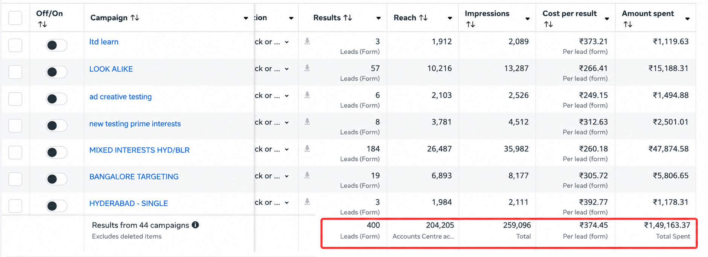
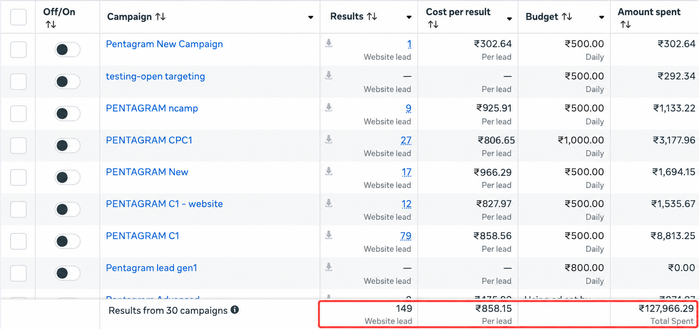

Same ₹1CR/Month. Two Completely Different Systems.
We don't run one playbook for every studio. Below are two live client systems — one built for volume, one built for filtration — that land on the exact same monthly revenue number through very different funnels.
Combine Design
Bangalore & Hyderabad
Instant-form lead gen at scale, tightly targeted by budget and intent, engineered for a high-volume sales pipeline.
Read the full case study ↓Pentagram Expert
NCR
Website-first funnel with heavy pre-qualification, plus a rebuilt brand and Instagram presence, engineered for fewer, higher-ticket projects.
Read the full case study ↓Combine Design Bangalore & Hyderabad
How a South India studio filled a high-volume sales pipeline with 400 leads a month and turned it into ₹1CR/M — without relying on referrals or builder contacts.

See the full strategy breakdown
The situation
Combine Design runs out of two of South India's most competitive interior design markets at once — Bangalore and Hyderabad. The studio had a sales team big enough to handle far more conversations than referrals and builder tie-ups could ever supply. The bottleneck wasn't demand in either city — it was lead volume.
The approach: volume, not filtration
With a sales team already structured for high call volume, and two markets large enough to sustain that volume without saturating, the highest-leverage move was to strip friction from the top of the funnel and let the sales process do the qualifying.
- Meta Instant Forms as the primary capture mechanism. Pre-filled, native, sub-minute submission — the drop in friction that made 400 leads a month possible at a sustainable cost per lead. A website-first funnel couldn't have matched this volume in these markets.
- Layered targeting. Budget indicators, home-ownership signals, and renovation-stage behaviour kept the pool large without letting it collapse into junk.
- Two-city campaign architecture. Bangalore and Hyderabad run as distinct campaigns with their own budgets and creative angles, rebalanced weekly based on cost-per-lead.
- Creative built for volume. Before/after reels, carousels, and UGC-style testimonials, rotated weekly to avoid fatigue and keep CPL stable as spend scales.
- Fast-follow sales process. Speed-to-lead is a hard KPI — qualification happens live on the call, not on the form, so the sales team sorts the 400 into real opportunities rather than relying on the ad platform to pre-sort them.
Campaign structure & ad split
Two campaign types run at all times, per city:
- Prospecting (65–70% of budget). Cold audiences via interest stacking, lookalikes built from top past clients, and geo-radius targeting around newly-handed-over residential projects where renovation intent is highest.
- Retargeting (20–25% of budget). Website visitors, 50%+ video viewers, and Instant Form openers who didn't complete — a warmer, cheaper-to-convert pool.
- Creative testing (10% of budget). A standing slice ring-fenced for testing new angles before they roll into prospecting, so testing never disrupts what's already working.
Budget between the two cities is rebalanced weekly based on cost-per-lead and lead-to-call conversion, typically close to even but shifting toward whichever city is performing better that week.
The funnel, step by step
- Ad served on Facebook and Instagram feed, Stories, and Reels to the layered cold or retargeting audience above.
- Instant Form opens in-platform, pre-filled, with 2–3 qualifying questions (budget range, city, timeline) so the sales team has context before the first call.
- Lead lands in CRM instantly, triggering an automated WhatsApp/SMS confirmation to keep the lead warm.
- Sales rep calls within minutes — speed-to-lead is treated as a hard KPI at this volume.
- Qualification happens live on the call, where the rep confirms budget fit and timeline and books a consultation or site visit.
The result
Lead flow went from inconsistent and referral-dependent to a predictable, scalable input the studio could dial up or down on command — feeding a full sales calendar across both cities every day and landing at ₹1CR/M month over month, without relying on referrals or builder contacts. This model works specifically because Combine Design already had the sales infrastructure for high call volume and operates in markets large enough to sustain it. A studio without that capacity, or one that only wants a handful of premium projects, would be a better fit for the filtration model used with Pentagram Expert below.
Pentagram Expert NCR
How an NCR studio rebuilt its brand and Instagram presence, then used a website-first funnel to generate 149 website leads.

See the full strategy breakdown
The situation
Pentagram Expert wanted the opposite of a high-volume pipeline: fewer, larger, better projects, not a call centre. In NCR, the highest-value projects rarely come from someone who clicked an ad five minutes ago — they come from clients who've already formed an opinion about the studio's taste and credibility. On top of that, the studio's Instagram presence was inconsistent and undersold the actual quality of its work.
The approach: filtration over volume
With a lean, consultative sales process and a project size where a handful of the right clients could hit the number, the funnel needed to filter before the phone ever rang — not after.
- Website-first funnel, not Instant Forms. The extra step of leaving the platform and reading a landing page naturally filters out low-intent clicks — only people willing to engage further convert.
- Heavier pre-qualification in the funnel. Budget, project scope, and timeline are surfaced before a lead is treated as sales-ready, so the sales team stopped re-qualifying people who were never a fit.
- Full brand and Instagram overhaul run alongside the ad strategy, so paid traffic lands on a presence that reads as premium — and organic followers started converting on their own.
- Narrow targeting to the specific micro-markets and household budget bands matching the studio's real project size, trading reach for fit.
- High-production creative — cinematic project walkthroughs, long-form before/after reels, and on-site testimonials — fewer ads, each held to a much higher bar than a volume account would use.
Campaign structure & ad split
Smaller and more concentrated than a volume account, across three campaign types:
- Conversion campaigns to the website (55–60% of budget). Optimised toward form completion, not clicks or generic leads.
- Retargeting (25% of budget). Website visitors who didn't convert, Instagram profile visitors, and engaged video viewers — where most qualified leads convert on their second or third touch.
- Brand & reach campaigns (15–20% of budget). Run separately to grow Instagram engagement and profile visits in target localities, feeding the organic side of the funnel.
The entire budget is concentrated in a small number of premium NCR localities — no multi-city split, since the audience stays narrow enough that filtration happens through targeting, not just the form.
The funnel, step by step
- Ad served to a narrow, locality- and income-targeted audience across Instagram and Facebook feed and Reels.
- Landing page, not an Instant Form — built around portfolio proof, testimonials, and brand credibility before any form appears.
- Qualification form asks for budget range, project type, timeline, and locality — framed as a fit-check, which discourages window-shoppers from finishing it.
- Submissions are screened against fit criteria — genuine fits go straight to a booked consultation, borderline submissions get a follow-up instead of a hard push.
- Consultation call is long-format and consultative, closer to a design discussion than a sales pitch — only possible because the funnel already filtered out leads not worth the time.
The result
A lean, high-quality pipeline of around 50 leads a month, filtered hard enough at the top that a much higher share convert — landing at ₹1CR/M with a fraction of the leads Combine Design needs, plus a brand and Instagram presence that keeps compounding organically outside of paid spend. This works specifically because Pentagram Expert's ambition was fewer, bigger projects and its sales process is built for depth, not speed. A studio without a distinct brand story, or with a large team built for high call volume, would get more value from the Combine Design model above.
Which strategy fits your studio?
Whether you want volume or filtration, we'll build the funnel around the way your sales process actually works.